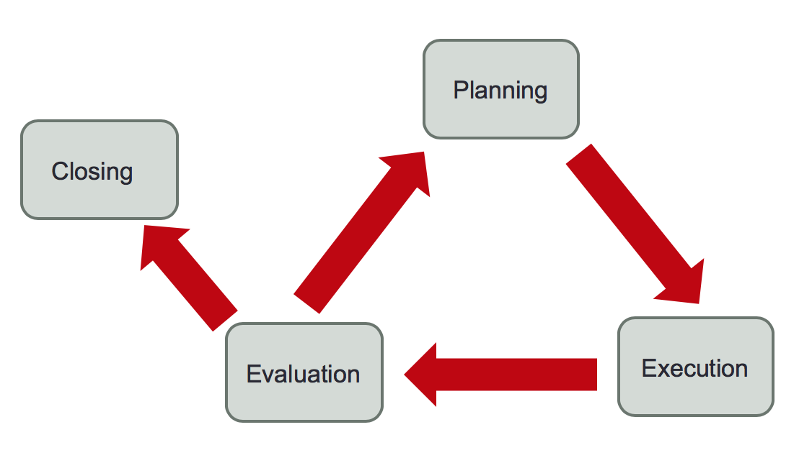
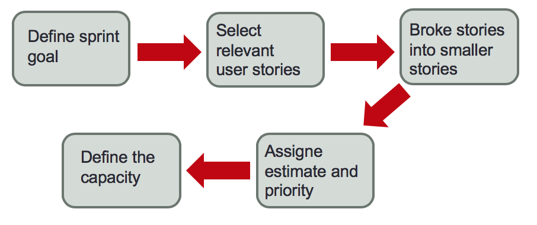
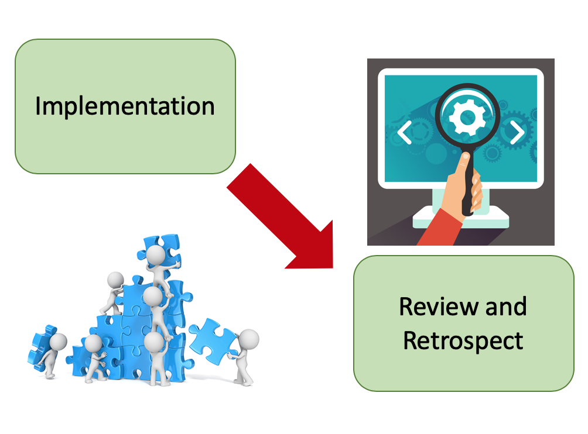
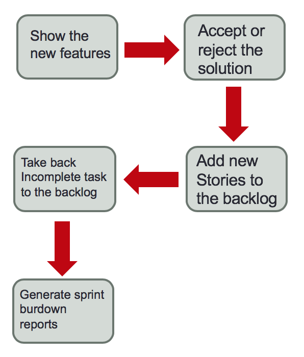

Purpose:
The purpose of the Administration of Specific Projects is to establish
and systematically carry out activities to meet the objectives
of a project in time and cost expected.

Software development and Maintenance process
Purpose:
The purpose of Software Development and Maintenance is the
systematic realization of the activities of analysis, design, construction,
integration and testing of new or modified software products fulfilling the specified requirements.
Planning
Sprint planning:
Who: scrum owner, team, scrum master.
Purpose: define a sprint backlog containing all items that
could be fully implemented until the end of the sprint.

Execution
Implementation:
Who: Scrum team
Purpose: To create sprint deliverables, a scrumboard is often used to
track the work and activities being carried out.
Review and Retrospect:
Who: Scrum team.
Purpose:
This phase is concerned with reviewing the deliverables and the work
that has been done and determining ways to improve the practices and
methods used to do project work.

Closing
Implementation:
Who: Scrum team
Purpose: To create sprint deliverables, a scrumboard is often used to
track the work and activities being carried out.
Review and Retrospect:
Who: Scrum team.
Purpose:
This phase is concerned with reviewing the deliverables and the work
that has been done and determining ways to improve the practices and
methods used to do project work.
Evaluation
Review meeting:
Who: Scrum owner, team and scrum master.
Purpose : Team shows which scrum backlog items they
complete based on the success criteria during the sprint.

Closing
Retrospective meeting:
Who: Scrum owner, team and scrum master.
Purpose: The retrospective is an integral part of the inspect
and adapt process. This help yo improve team performance.
Description:
Revisar con el Responsable de Gestión de Proyectos la Descripción del Proyecto
Input: Descripción del Proyecto
Roles: Scrum Owner, Scrum Master
Description:
Con base a la descripcion del proyecto y al desarrollo y mantenimiento del proyecto, se define el proceso
especifico donde se considera el calcance, la complejidad y la agnitud del proyecto
Input: Descripcion del proyecto, Documentacion del proceso
Output: Proyecto Especifico
Roles: Scrum master
Description:
Definir con el cliente el protocolo de entregas de cada entregable establecido en la descripcion del
proyecto
Input: Descripcion del proyecto
Output: Protocolo de entregas
Roles: Scrum master, stackholders
Description:
Identificar el número de ciclos y las actividades específicas que deben llevarse a cabo para producir los
entregables y sus componentes identificados en la Descripción del Proyecto
Roles: Scrum master
Description:
Identificar las actividades para llevar a cabo el Protocolo de Entrega. Documentar el resultado como
Ciclos y Actividades
Input: Descripcion del proyecto
Output: Protocolo de entregas, ciclos y actividades
Roles: Scrum master, stackholders
Description:
Establecer el Tiempo Estimado para desarrollar cada actividad considerando la información
histórica y las Metas Cuantitativas para el Proyecto
Output: Tiempo estimado y metas cuatitativas
Roles: Scrum master
Description:
Elaborar el Plan de Adquisiciones y Capacitación, definiendo las características y el calendario en
cuanto a recursos humanos, materiales, equipo y herramientas, incluyendo la capacitación requerida
para que el equipo de trabajo pueda
Output: Plan de adquisicion y capacitacion
Roles: Scrum master
Description:
Conformar el Equipo de Trabajo , asignando roles y responsabilidades basá ndose en la Descripción
del Proyecto
Input: Descripcion del proyecto
Roles: Scrum Owner, Scrum Master
Description:
Asignar fechas de inicio y fin a cada una de las actividades para generar el Calendario de trabajo
tomando en cuenta los recursos asignados, la secuencia y dependencia de las actividades
Output: Calendario
Roles: Scrum master
Description:
Evaluar y documentar el Costo Estimado del proyecto, tomando en cuenta las Metas Cuantitativas para
el Proyecto
Input: Metas cuantitativas
Output: Costo estimado
Roles: Scrum master
Description:
Identificar, describir y evaluar los riesgos que pueden afectar el proyecto, quecontemple riesgos
relacionados con el equipo de trabajo incluyendo al Cliente y a los usuarios, riesgos con la
tecnologí a o la metodologí a, riesgos con la organizació n del proyecto (costo, tiempo, alcance y
recursos) o riesgos externos al proyecto. Identificar la probabilidad e impacto de cada riesgo
estimando sus implicaciones en los objetivos del proyecto (aná lisis cuantitativo). Priorizar los
efectos de los riesgos sobre los objetivos del proyecto (aná lisis cualitativo). Desarrollar
procedimientos para reducir el impacto de los riesgos. Documentar en el Plan de Manejo de Riesgos o
actualizarlo.
Output: Plan de Manejo de Riesgos
Roles: Scrum Owner, Scrum Master
Description:
Generar el Plan del Proyecto o actualizarlo antes de iniciar un nuevo ciclo. Además el Plan del
Proyecto se puede actualizar a causa de Solicitud de Cambios por parte del Cliente, Acciones
Correctivas o Preventivas provenientes de Gestión de Proyectos o Acciones Correctivas de este
proceso
Input: Solicitudes de cambio, acciones correctivas o preventivas
Output: Plan del proyecto
Roles: Scrum master
Description:
Generar el Plan de Desarrollo en función del Plan del Proyecto o actualizarlo antes de iniciar un
nuevo ciclo. Ademá s el Plan de Desarrollo se puede actualizar a causa de Solicitud de Cambios por
parte del Cliente, Acciones Correctivas o Preventivas provenientes de Gestió n de Proyectos o
Acciones Correctivas de este proceso
Input: Plan del proyecto
Output: Plan de desarrollo
Roles: Scrum Owner, Scrum Master
Description:
Verificar el Plan del Proyecto y el Plan de Desarrollo
Input: Plan del proyecto, plan de desarrollo
Output: Reporte de verificacion
Roles: Scrum Owner, Scrum Master
Description:
Corregir los defectos encontrados en el Plan del Proyecto y en el Plan de Desarrollo con base en el
Reporte de Verificación y obtener la aprobació n de las correccione
Input: Reporte de verificacion
Output: Plan del proyecto, plan de desarrollo
Roles: Scrum master
Description:
Validar el Plan del Proyecto y el Plan de Desarrollo
Input: Plan del proyecto, plan de desarrollo
Output: reporte de validacion
Roles: Scrum owner
Description:
Corregir los defectos encontrados en el Plan del Proyecto y Plan de Desarrollo con base en el
Reporte de Validación y obtener la aprobación de las correcciones
Input: reporte de validacion
Output: Plan del proyecto, plan de desarrollo
Roles: Scrum master
Description:
Dar inicio formal a un nuevo ciclo una vez que se haya asegurado el cumplimiento de las condiciones
iniciales del ciclo
Roles: Scrum Owner, Scrum Master
Description:
Acordar con el Responsable de Desarrollo y Mantenimiento del proyecto la asignación de tareas al
Equipo de Trabajo incluyendo a los subcontratistas.
Input: Equipo de trabajo
Roles: Scrum master
Description:
Acordar la distribución de la información necesaria al equipo de trabajo con base en el Plan de
Comunicación e Implantación.
Input: Plan de comunicación e implantacion
Roles: Scrum master
Description:
Revisar con el Responsable de Desarrollo y Mantenimiento del proyecto la Descripción del Producto,
el Equipo de Trabajo y Calendario.
Input: descripcion del producto, equipo de trabajo, calendario
Output: descripcion del producto, equipo de trabajo, calendario
Roles: Scrum master
Description:
Dar seguimiento al Plan de Adquisiciones y Capacitación. Aceptar o rechazar la Asignación de
Recursos humanos o subcontratistas. Distribuir los recursos a los miembros del equipo para que
puedan llevar a cabo las actividades.
Input: Plan de Adquisiciones y Capacitación, asignacion de recursos
Output: asignacion de recursos
Roles: scrum master, scrum owner
Description:
Manejar la relació n con subcontratistas que implica planificar, revisar y auditar las actividades,
asegurando la calidad de los productos o servicios contratados y el cumplimiento con los está ndares
y especificaciones acordadas.
Roles: scrum master, scrum owner
Description:
Recolectar y analizar los Reportes de Actividades , Reportes de Mediciones y Sugerencias de Mejora y
productos de trabajo.
Output: reporte de actividades, reporte de mediciones y sugerencias de mejora
Roles: Scrum master
Description:
Revisar el Registro de Rastreo de los requerimientos del usuario a través del ciclo.
Input: registro de rastreo
Output: registro de rastreo
Roles: Scrum master
Description:
Revisar los productos generados durante el ciclo, que forman parte de la Configuración de
Software
Input: Configuración de Software
Output: Configuración de Software
Roles: Scrum master
Description:
Recibir y analizar las Solicitudes de Cambios e incorporar los cambios aprobados en el Plan del
Proyecto y en el Plan de Desarrollo. En caso de cambios a requerimientos se incorporan al inicio de
un nuevo ciclo.
Input: solicitudes de cambio
Output: plan de proyecto, plan de desarollo
Roles: Scrum master
Description:
Conduce reuniones de revisió n con el equipo de trabajo y con el Cliente, generando Minutas con
puntos tratados y acuerdos tomados.
Output: minutas
Roles: Scrum master, scrum team, stackholders
Description:
Evaluar el cumplimiento del Plan del Proyecto y el Plan de Desarrollo , con respecto al alcance,
costo, calendario, equipo de trabajo, proceso y se establecen Acciones Correctivas
Input: plan de proyecto, plan de desarrollo
Roles: Scrum master
Description:
Dar seguimiento y controlar el Plan de Manejo de Riesgos . Identificar nuevos riesgos y actualizar
el plan.
Input: plan de manejo de riesgos
Output: plan de manejo de riesgos
Roles: Scrum owner
Description:
Las actividades que no fueron completadas por el equipo durante el ciclo regresan al backlog para
volver a ser analizadas por el product owner
Output: Backlog
Roles: Scrum team, scrum owner
Description:
Generar el Reporte de Seguimiento del proyecto, considerando los Reportes de Actividades
Input: reportes de actividades
Output: reporte de seguimiento
Roles: Scrum master
Description:
Formalizar la terminación del ciclo o del proyecto de acuerdo al Protocolo de Entrega establecido en
el Plan del Proyecto y obtener el Documento de Aceptación.
Input: protocolo de entregas, plan del proyecto
Output: documento de aceptacion
Roles: Scrum master, stackholders
Description:
Generar el Reporte de Mediciones y Sugerencias de Mejora de este proceso, de acuerdo al Plan de
Mediciones de Procesos.
Input: plan de medicion de procesos
Output: reporte de mejoras, sugerencias de mejora
Roles: scrum master
Description:
Identificar las Lecciones Aprendidas e integrarlas a la Base de Conocimiento. Como ejemplo, se
pueden considerar mejores prácticas, experiencias exitosas de manejo de riesgos problemas
recurrentes, entre otras.
Output: lecciones aprendidas, base de conocimientos
Roles: scrum master
Description:
Revisar con los miembros del equipo de trabajo el Plan de Desarrollo actual para
lograr un entendimiento común y obtener su compromiso con el proyecto
Input:
Plan de desarrollo
Roles:
Scrum master, scrum team
Requirements
Backlog:
Who: Scrum owner, team, scrum master, stakeholders
Purpose: Create a list of all things that needs to be done in the project
Description:
Verificar la Especificación de Requerimientos (Ver1 ).
Input: Especificaciones de requerimientos
Output: Reporte de verificacion
Roles: Master
Description:
Corregir los defectos encontrados en la Especificación de Requerimientos con
base en el Reporte de Verificación y obtener la aprobació n de las correcciones
Input: Reporte de verificacion
Output: Especificaciones de requerimientos
Roles: Owner, diseñador de interface
Description:
Corregir los defectos encontrados en la Especificación de Requerimientos con base en
el Reporte de Validación y obtener la aprobació n de las correcciones.
Input: Reporte de validacion
Output: Especificaciones de requerimientos
Roles: Owner, diseñador de interface
Description:
Corregir los defectos encontrados en el Plan de Pruebas de Sistema con base en
el Reporte de Verificación y obtener la aprobació n de las correcciones.
Input: Reporte de verifiacion
Output: Plan de pruebas
Roles: Responsable de pruebas
Description:
Corregir los defectos encontrados en el Manual de Usuario con base en el
Reporte de Verificación y obtener la aprobación de las correcciones.
Input: Reporte de verifiacion
Output: Manual de usuario
Roles: Master
Description:
Incorporar Especificación de Requerimientos, Plan de Pruebas de Sistema y Manual de Usuario
como líneas base a la Configuración de Software
Input: Especificaciones de requerimientos, plan de pruebas, manual de usuario,
backlog
Output: Configuracion de software
Roles: Master
Description:
Distribuir tareas a los miembros del equipo de trabajo según su rol, de acuerdo
al Plan de Desarrollo actual.
Input: Plan de desarrollo
Roles: Master, owner, diseñador
Description:
Analizar la Especificación de Requerimientos para generar la descripción de la estructura
interna del
sistema y su descomposición en subsistemas, y éstos a su vez en componentes, definiendo las
interfaces
entre
ellos, Describir el detalle de la apariencia y el comportamiento de la interfaz con base en la
Especificación de Requerimientos de forma que se puedan prever los recursos para su
implementación,
Describir el detalle de los componentes que permita su construcción de manera evidente, Generar
o actualizar
el Análisis y Diseño, Generar o modificar el Registro de Rastreo
Input: Analisis y diseño
Output: Analisis y diseño
Roles: Owner, diseñador interface, diseñador
Description:
Verificar el Análisis y Diseño y el Registro de Rastreo
Input: Analisis y diseño, registro de rastreo
Output: Reporte de verificacion
Roles: Master
Description:
Corregir los defectos encontrados en el Análisis y Diseño y en el Registro
de Rastreo con base en el Reporte de Verificación y obtener la aprobación de las
correcciones.
Input: Reporte de verificacion
Output: Analisis y diseño, registro de rastreo
Roles: Owner, diseñador interface, diseñador
Description:
Corregir los defectos encontrados en el Análisis y Diseño con base en el Reporte de Validación
y obtener la aprobación de las correcciones.
Input: reporte de validacion
Output: Analisis y diseño
Roles: Owner, diseñador interface, diseñador
Description:
Elaborar o modificar Plan de Pruebas de Integración
Input: Plan de pruebas de integracion
Output: Plan de pruebas de integracion
Roles: Responsable de pruebas
Description:
Corregir los defectos encontrados en el Plan de Pruebas de Integración con base en el Reporte de
Verificación y obtener la aprobación de las correcciones.
Input: Reporte de verificacion
Output: Plan de pruebas de integracion
Roles: Responsable de pruebas
Description:
Incorporar Análisis y Diseño, Registro de Rastreo y Plan de Pruebas de Integración
como líneas base a la Configuración de Software.
Input: Plan de pruebas de integracion, analisis y diseño, registro de rastreo
Output: Configuracion de software
Roles: Master
Description:
Construir o modificar el(los) Componente (s) de software: Implementar o modificar Componente (s)
con base a
la parte detallada del Análisis y Diseño, Definir y aplicar pruebas unitarias para verificar que
el
funcionamiento de cada componente esté acorde con la parte detallada del Análisis y Diseño,
Corregir los
defectos encontrados hasta lograr pruebas unitarias exitosas (sin defectos), Actualizar el
Registro de
Rastreo, incorporando los componentes construidos o modificados.
Output: Componenetes del sofware
Roles: Scrum team
Description:
Corregir los defectos encontrados en el Registro de Rastreo con base en el Reporte de
Verificación y obtener
la aprobació n de las correcciones.
Input: reporte de verificacion
Output: registro de rastreo
Roles: scrum team
Description:
Incorporar Componentes y Registro de Rastreo como lí neas base a la Configuración de
Software
Input: componentes del software, registro de rastreo
Output: Configuracion del software
Roles: Master
Description:
Distribuir tareas a los miembros del equipo de trabajo según su rol, de acuerdo al Plan de
Desarrollo
actual
Input: Plan de desarrollo
Roles: master
Description:
Realizar integración y pruebas: Integrar los componentes en subsistemas o en el sistema del
Software y
aplicar las pruebas siguiendo el Plan de Pruebas de Integración, documentando los resultados en
un Reporte
de Pruebas de Integración, Corregir los defectos encontrados, con base en Reporte de Pruebas de
Integración,
hasta lograr una prueba de integración exitosa (sin defectos), Actualizar el Registro de
Rastreo.
Input: Registro de rastreo, plan de pruebas de integracion, reporte de pruebas
Output: registro de rastreo
Roles: scrum team
Description:
Documentar el Manual de Operación o modificar el manual existente.
Input: Manual de operaciones
Output: Manual de operaciones
Roles: master
Description:
Corregir los defectos encontrados en el Manual de Operación con base en el Reporte de
Verificación y obtener
la aprobación de las correcciones.
Input: reporte de verifiacion
Output: Manual de operaciones
Roles: master
Description:
Realizar las pruebas de sistema siguiendo el Plan de Pruebas de Sistema, documentando los
resultados en un
Reporte de Pruebas de Sistema.
Input: plan de pruebas del sistema
Output: reporte de pruebas del sistema
Roles: responsable de purebas
Description:
Corregir los defectos encontrados en las pruebas de sistema con base en el Reporte de Pruebas de
Sistema y
obtener la aprobación de las correcciones.
Input: reporte de pruebas del sistema
Output: plan de pruebas del sistema
Roles: scrum team
Description:
Corregir los defectos encontrados en el Manual de Usuario con base en el Reporte de Verificación
y obtener
la aprobación de las correcciones.
Input: reporte de verificacion
Output: Manual de usuario
Roles: master
Description:
Incorporar Software, Reporte de Pruebas de Integración, Registro de Rastreo, Manual de Operación
y Manual de
Usuario como líneas base a la Configuración de Software.
Input: manual de operaciones, de usuario, plan de pruebas del sistema, registro de
rastreo,
Output: configuracion del software
Roles: master
Description:
Documentar el Manual de Mantenimiento o modificar el existente.
Input: manual de mantenimiento
Output: manual de mantenimiento
Roles: master
Description:
Corregir los defectos encontrados en el Manual de Mantenimiento con base en el Reporte de
Verificación y
obtener la aprobació n de las correcciones.
Input: reporte de verificacion
Output: manual de mantenimiento
Roles: master
Description:
Incorporar Manual de Mantenimiento como lí nea base a la Configuración de Software .
Input: manual de mantenimiento
Output: configuracion del software
Roles: master
Description:
Generar el Reporte de Mediciones y Sugerencias de Mejora
Output: Reporte de mejoras y sugerencias
Roles: master
Roles
Roles
Description
Responsibilities
Skills
Scrum owner
The Scrum Product Owner is a central role within the Scrum Framework. Most of the
responsibilities of the classical product manager and the project manager are combined
within this single role. He represents the end customer and/or other stakeholders and is
responsible for maximizing the value of the product by ensuring that the right work is
done at the right time.
Managing the Scrum Product Backlog, Release Management, Stakeholder Management, Work
closely with the Scrum Team, reaching the project goals
Scrum Master
The Scrum Master is part of the Scrum Team and acts as a servant-leader for the Scrum
Team.
Guard the Scrum Team from external requests and disruptions, Act as a change agent and
adapt processes to maximize productivity of the team, Coach the Scrum Team, Remove
impediments for the Scrum Team, Ensure efficient communication between the Scrum Team
and the Scrum Product Owner, Facilitate the various Scrum Events, guard the team members
from "urgent requests"
Scrum Team
A Scrum Team is a collection of individuals working together to deliver the requested
and committed product increments
They have to breakdown the requirements, create task, estimate and distribute them. In
other words this means that they have to create the Sprint Backlog, They have to perform
the short Daily Sprint Meeting, They have to ensure that at the end of the Sprint
potentially shippable functionality is delivered, They have to update the status and the
remaining efforts for their tasks to allow creation of a Sprint Burndown Diagram.
Individuals within the Scrum Team will most certainly have specialized skills and
focus. However to achieve best possible performance it would be optimal to have a
balanced set of skills. Only then the Scrum Team will be able to deal with the
ever-changing challenges and can act as autonomous as it is possible. On one hand this
means that a Scrum Team should be multidisciplinary (developers, tester, architects etc)
right from the beginning.
Stakeholders
These are the people who’ll help you discover, develop, release, support and promote the
product. They include: customers, project sponsors, colleagues who work with and
understand your customers, people from each part of the business needed to deliver the
product, external parties such as donors or regulators.
Interface designer
Knowledge in design of user interfaces and ergonomic criteria.
Designer
Knowledge and experience in the design of the structure of the software components
Test Manager
Knowledge and experience in planning and conducting integration tests and system
Templates
Deliverable
Objective
Template
Minutes
Document describing the purpose of the meetings held, the
points and agreements.